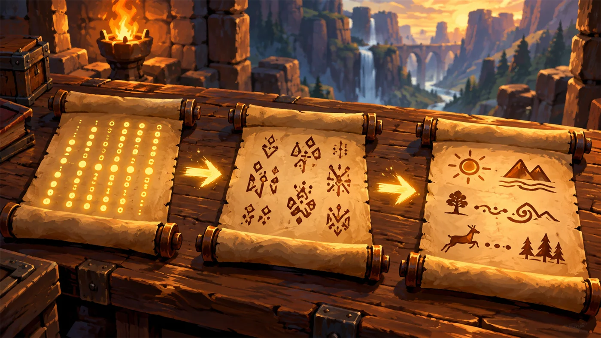
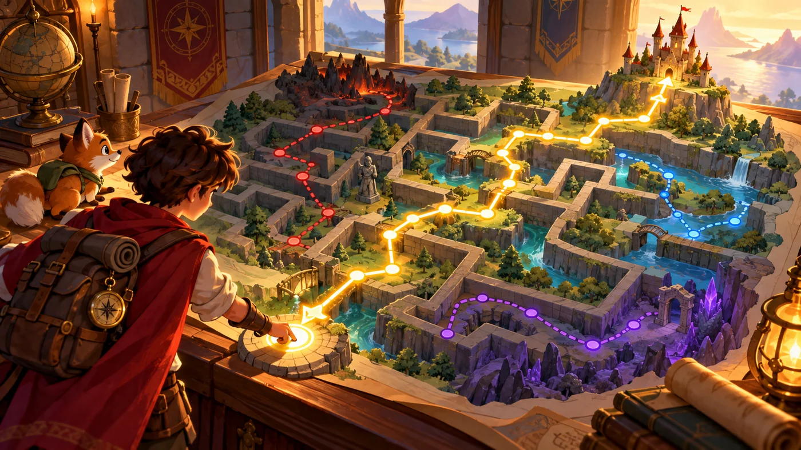
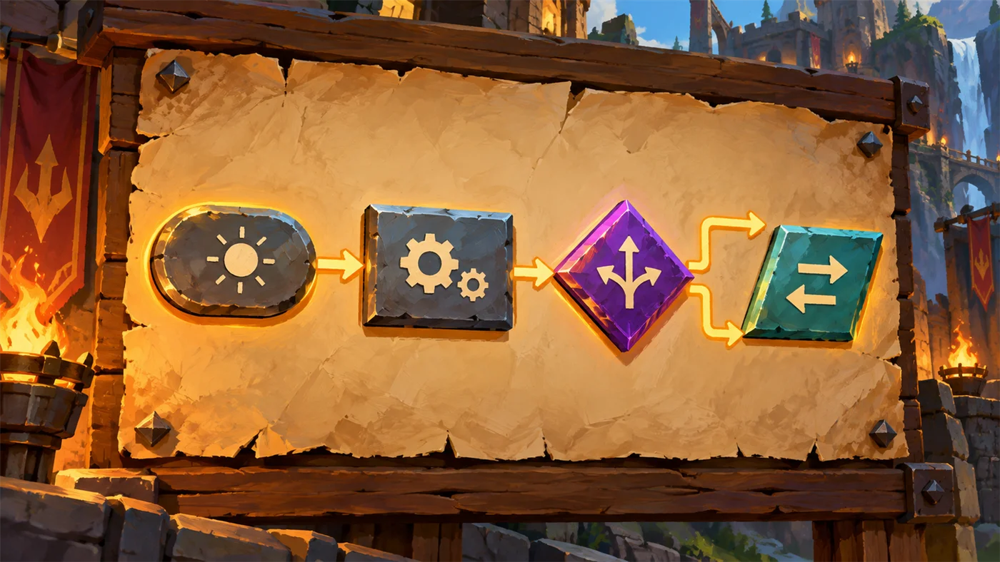
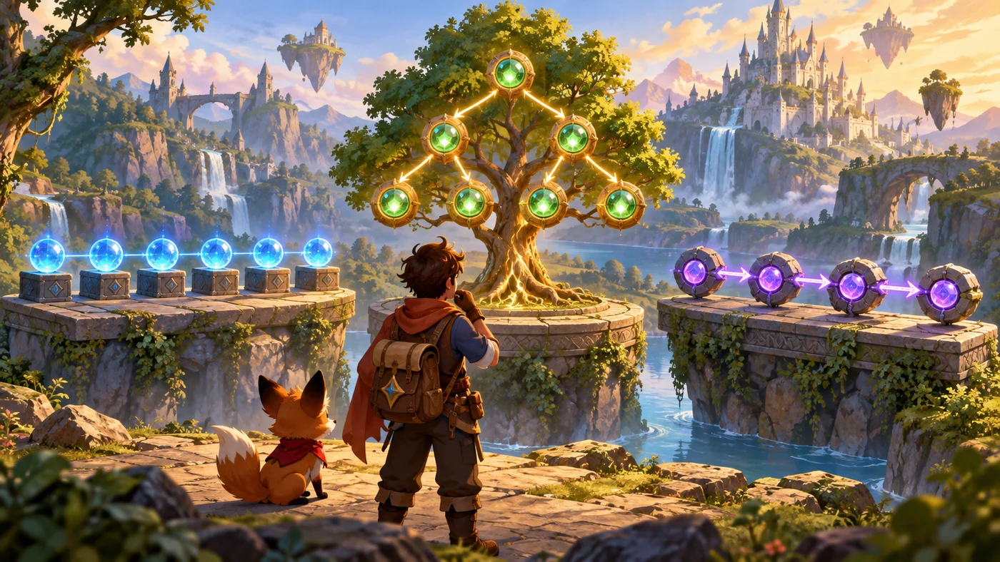
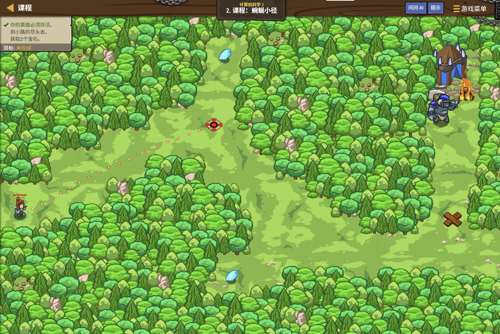

故事：林地边缘有一条弯弯曲曲的小路，走到底是一处缺口。
安雅说：先把路走通，再在终点修一道栅栏——这样野兽就进不来了。
注意顺序：先走完路，才修栅栏。反过来的话，栅栏就修在半路上了。
扣哒考级 · GESP C++ 二级 · 第 2 单元 | 回声溪谷 ECHOSTREAM VALLEY
会画画的羊皮纸 程序设计语言与流程图
Programming Languages & Flowcharts

安雅
红发队长 · 你的向导
溪谷中段有一座废弃的哨屋，屋里的木架上堆满了羊皮纸。
安雅随手抽出一卷——上面没有字，只有一个又一个方块、菱形和箭头。
这是上一位守夜人留下的。她说，他不会写字，但他会把"事情该怎么做"画下来。
你凑近一看，竟然看懂了大半：从哪儿开始、先做什么、什么情况下拐弯、什么时候停——全在图上。
安雅随手抽出一卷——上面没有字，只有一个又一个方块、菱形和箭头。
这是上一位守夜人留下的。她说，他不会写字，但他会把"事情该怎么做"画下来。
你凑近一看，竟然看懂了大半：从哪儿开始、先做什么、什么情况下拐弯、什么时候停——全在图上。
安雅 · 红发队长
写程序之前，得先把"要做的事"想清楚。可"想清楚"这件事，光在脑子里转是不够的——你得把它写下来、画出来，才能检查有没有漏。
这一单元讲的就是这些"把想法落到纸上的办法"：算法、流程图、伪代码。

assets/illustrations/py-L2-02-01_language_scrolls.webp
【配图位】哨屋木桌上摊着三卷羊皮纸：左边一卷上只有密集的发光小点（0 和 1），中间一卷上是短短的缩写符文（MOV、ADD 之类），右边一卷上是能读懂的完整句子；三卷之间用发光箭头连成一条"越来越像人话"的演进链；一名新兵俯身细看，扣哒鸭趴在卷轴边上打瞌睡。
0 单元导语与目标
Unit Overview
0.1 学习目标
1学完这个单元，你将能……
- 说出算法是什么，它有哪些特征
- 用自然语言、流程图、伪代码三种方式描述同一件事
- 认出流程图的四种基本符号，并说出各自的含义
- 画出顺序、分支、循环三种结构的流程图
- 说清机器语言、汇编语言、高级语言的区别
- 分清"编译"和"解释"这两种翻译方式
2对标 GESP 考纲（C++ 二级）
- 掌握程序设计语言的基本概念，了解程序设计语言的分类
- 理解算法的概念与基本特征
- 了解流程图的基本概念与常用图形符号
- 能读懂并画出顺序、分支、循环三种结构的流程图
- 考核目标：能根据流程图判断执行结果，能选对描述方式
0.2 考纲对照
| 本单元小节 | 对应考纲条目 | 真题常考形式 |
|---|---|---|
| 1 算法 | 算法的概念与特征 | 判断某段描述"算不算算法" |
| 2 三种描述方式 | 描述算法的不同方式 | 哪种方式最直观 / 哪种方式最容易出错 |
| 3 流程图符号 | 流程图的基本符号 | 看符号说含义，或看含义选符号 |
| 4 三种结构 | 用流程图表示三种结构 | 给一张流程图，问执行结果 |
| 5 语言层次 | 程序设计语言的分类 | 哪一类语言能被计算机直接执行 |
1 算法：做事的步骤
Algorithms
1.1 什么是算法
安雅把羊皮纸摊平，指着上面第一条路线：从一个地方出发，走到另一个地方，一共几步——这串步骤写下来，就是一个算法。
算法的定义：
算法是解决某个问题的一系列清晰、有限的操作步骤。
换成大白话：算法就是"这件事该怎么做"的一份详细说明书。
注意：算法说的是"怎么做"，不是"写成了什么语言"。同一件事，用中文写是算法，用流程图画出也是算法，用 C++ 敲出来还是算法。
换成大白话：算法就是"这件事该怎么做"的一份详细说明书。
注意：算法说的是"怎么做"，不是"写成了什么语言"。同一件事，用中文写是算法，用流程图画出也是算法，用 C++ 敲出来还是算法。

assets/illustrations/cpp-L2-02-03_algorithm_route.webp
【配图位】溪谷山道旁立着一块指路石，石面上刻着一条被画成若干小段的路线图：每一小段旁都标着"直走几步""左转""到了岔口看情况"等小记号；一名新兵顺着一块块踏脚石往前走，每踏上一块石头就亮起一盏小灯；扣哒鸭举着小旗在终点等着。
1.2 算法的五个特征
| 特征 | 什么意思 | 反例（不满足会怎样） |
|---|---|---|
| 有穷性 | 必须在有限步之内结束 | 一直不停，就永远出不来结果 |
| 确定性 | 每一步的含义都是明确的，不能有歧义 | 写"炒一会儿"，多一会儿算一会儿？ |
| 有输入 | 有零个或多个输入 | 没有输入时，至少要能算出固定结果 |
| 有输出 | 至少有一个输出结果 | 忙了半天什么都没有，那不算解决问题 |
| 可行性 | 每一步都能真正做出来 | "一步跨到对面山"，做不到 |
打个比方：
写算法就像写菜谱。一份好菜谱必须满足这几条：
有穷性——做完最后一步菜就好了，不能永远炒下去；
确定性——不能写"盐少许"（少许是多少？），要写"一勺"；
有输入——食材；有输出——做好的一盘菜；
可行性——得是家里能做的，不能写"先飞到月亮上取一勺月光"。
用这五条去检查，就能判断一段步骤"算不算算法"。
有穷性——做完最后一步菜就好了，不能永远炒下去；
确定性——不能写"盐少许"（少许是多少？），要写"一勺"；
有输入——食材；有输出——做好的一盘菜；
可行性——得是家里能做的，不能写"先飞到月亮上取一勺月光"。
用这五条去检查，就能判断一段步骤"算不算算法"。
2 三种描述方式
Three Ways to Describe
2.1 自然语言
用中文描述"求两个数中的较大者"
C++
第一步：读入两个数 a 和 b
第二步：如果 a 比 b 大，就把 a 记作结果
第三步：否则把 b 记作结果
第四步：输出结果优点 好写、好读，谁都能看懂 缺点 容易有歧义、容易写漏
自然语言最大的毛病：一句话能有好几种理解。
比如把大的放前面——是"两个数里大的"还是"一堆数里最大的"？
所以正式的算法描述里，自然语言通常只用来做辅助说明，不单独用来写算法。
所以正式的算法描述里，自然语言通常只用来做辅助说明，不单独用来写算法。
2.2 流程图
流程图用图形来表示步骤，一步一步用箭头连起来。它最大的好处是一眼就能看出"从哪儿到哪儿"。
2.3 伪代码
伪代码：长得像程序，但不是任何一种真语言
C++
输入 a, b
若 a > b 则
输出 a
否则
输出 b优点 比中文精确，又不用管语法细节 缺点 计算机不能直接执行，只能给人看
| 描述方式 | 好在哪里 | 差在哪里 | 适合什么时候用 |
|---|---|---|---|
| 自然语言 | 谁都能看懂 | 容易有歧义、容易漏步 | 口头说明、大致沟通 |
| 流程图 | 直观，能看到分支与循环 | 步骤太多时图会画得很大 | 讲清结构、检查逻辑 |
| 伪代码 | 精确、接近程序、好改 | 计算机不能直接执行 | 动手写代码前的草稿 |
打个比方：
自然语言像跟朋友口头说"你走到路口往左拐"——方便，但对方可能听岔。
流程图像给他画一张手绘地图——一眼就明白，还看得出哪里要拐弯。
伪代码像给他一份带编号的详细指令单——精确，但他自己还是得动手走一遍。
三种方式没有谁最好，看你要说给谁听、要解决什么问题。
流程图像给他画一张手绘地图——一眼就明白，还看得出哪里要拐弯。
伪代码像给他一份带编号的详细指令单——精确，但他自己还是得动手走一遍。
三种方式没有谁最好，看你要说给谁听、要解决什么问题。
3 流程图的四种符号
Flowchart Symbols
图 3（SVG）：流程图的四种基本符号

assets/illustrations/py-L2-02-02_flowchart_parchment.webp
【配图位】溪谷告示板上钉着一张摊开的大羊皮纸，纸上用粗墨线画着一条完整的流程图：最上方是一个圆角矩形起止框，中间串着两个矩形处理框，接着是一个菱形判断框（两个出口分别写着"是"和"否"，都继续往后连），最后是一个平行四边形输入输出框与结束框；一名新兵手持墨笔站在板前，正往菱形的一个出口补写"否"字。扣哒世界卡通风格。
| 符号 | 形状 | 含义 | 几个出口 |
|---|---|---|---|
| 起止框 | 圆角矩形 | 开始 / 结束 | 1 个 |
| 处理框 | 矩形 | 执行一步操作 | 1 个 |
| 判断框 | 菱形 | 判断条件是否成立 | 2 个 |
| 输入输出框 | 平行四边形 | 输入数据 / 输出结果 | 1 个 |
好记的口诀：
圆角开始，方框干活，菱形判断，斜框进出。
考试时最容易考的就是菱形——记住它有两个出口，一定要分别标上"是 / 否"。
考试时最容易考的就是菱形——记住它有两个出口，一定要分别标上"是 / 否"。
4 三种结构的画法
Three Structures
4.1 顺序结构
一条线走到底——上一个框的出口，直接连到下一个框的入口。
4.2 分支结构
遇到菱形就分成两条路，各自走完之后再合并回同一条线。
4.3 循环结构
走到某一步之后往回连一条线，形成"绕圈"——这就是循环。
图 5（SVG）：顺序、分支、循环三种结构的流程图

assets/illustrations/cpp-L2-02-04_three_structures_scroll.webp
【配图位】哨屋木架上并排挂着三卷展开的羊皮纸：第一卷画着一条笔直的路（顺序）；第二卷画着一处岔口、两条路绕过后重新汇合（分支）；第三卷画着一条环形的闭合路线、箭头绕回起点（循环）；一名新兵站在三卷图前依次指点，扣哒鸭用翅膀指着第三卷的环形箭头。扣哒世界卡通风格。
打个比方：
顺序像走一条直路——一直往前。
分支像走到岔口问一句"往哪边"——但两条岔路最后都会回到同一条大道上。
循环像围着操场跑步——跑完一圈又回到起点，直到有人说"停"。
三条线画出来，谁都能一眼看懂你的想法。
分支像走到岔口问一句"往哪边"——但两条岔路最后都会回到同一条大道上。
循环像围着操场跑步——跑完一圈又回到起点，直到有人说"停"。
三条线画出来，谁都能一眼看懂你的想法。
5 编程语言的层次
Language Levels
5.1 机器 / 汇编 / 高级语言
图 7（SVG）：编程语言的三个层次
| 层次 | 特点 | 能被直接执行吗 | 需要什么翻译 |
|---|---|---|---|
| 机器语言 | 只有 0 和 1，人几乎看不懂 | 能 | 不需要 |
| 汇编语言 | 用助记符，仍依赖具体机器 | 不能 | 汇编器 |
| 高级语言 | 接近自然语言与数学，可读性好、可移植 | 不能 | 编译器或解释器 |
一句话记牢：
计算机唯一能直接执行的，是机器语言。
汇编语言和高级语言都必须经过翻译，变成机器语言之后才能运行。
C++ 属于高级语言，而且是"编译型"的高级语言。
汇编语言和高级语言都必须经过翻译，变成机器语言之后才能运行。
C++ 属于高级语言，而且是"编译型"的高级语言。
5.2 编译与解释
| 方式 | 怎么做 | 特点 | 例子 |
|---|---|---|---|
| 编译 | 先把整个程序一次性翻译成可执行文件，再运行 | 翻译一次可反复运行，速度快；改一行要重新编译 | C++ |
| 解释 | 一行一行边翻译边执行 | 改完立刻能跑；每次运行都要重新翻译，速度相对慢 | Python |
打个比方：
编译像请人把整本外文书一次性翻译成中文出版——出版要花时间，但之后谁都能随时拿起来读。
解释像请一位同声传译——你说一句他翻一句，随时能改口，但每次讲话都得重新翻一遍。
所以 C++ 要"编译"、Python 靠"解释"——这也是为什么 C++ 改一行就得重新编译。
解释像请一位同声传译——你说一句他翻一句，随时能改口，但每次讲话都得重新翻一遍。
所以 C++ 要"编译"、Python 靠"解释"——这也是为什么 C++ 改一行就得重新编译。
6 代码实战
Level Practice
关卡
蜿蜒小径
进入关卡 →思路：规划出一条从起点到终点的路线（这就是你的算法），
再一步步用 hero.moveXY() 走过去，最后在终点建造栅栏。

assets/stages/py-L2-02-stage1_winding_path.webp
【游戏截图位】关卡蜿蜒小径通关画面：林间一条弯曲小径已被走通，英雄站在小径尽头的缺口处，身旁刚立起一段木栅栏；地面上留有连续的脚印轨迹；屏幕下方代码区依次列出四个坐标移动与建造语句，右上角显示"关卡完成"提示。
重点示例：先规划路线，再一步步走
C++
// 到小路的尽头去，并在那儿修一个栅栏
// 利用你的 moveXY(x, y) 坐标移动功能
#include <iostream>
using namespace std;
int main() {
hero.moveXY(36, 59);
hero.moveXY(37, 12);
hero.moveXY(66, 17);
hero.buildXY("fence", 71, 24);
return 0;
}要点 这几行代码就是一份"顺序结构"的算法：一步做完再做下一步
和本单元的关联：
你在动手写代码之前，其实已经在脑子里画过一张路线图了——
先到哪个坐标、再到哪个坐标、最后在哪里修栅栏。
那张"路线图"就是算法；写下来是伪代码，画出来就是流程图，敲进电脑就是 C++ 代码。
去扣哒世界闯这一关 →
先到哪个坐标、再到哪个坐标、最后在哪里修栅栏。
那张"路线图"就是算法；写下来是伪代码，画出来就是流程图，敲进电脑就是 C++ 代码。
7 常见陷阱
Common Pitfalls

扣哒鸭 · 调试官
流程图和算法这一块，考的就是"你有没有真看懂"。四条，条条都能出题。
1
把判断框和输入输出框画反。

扣哒鸭：菱形才是判断框，平行四边形是输入输出框。
记法：菱形像一块告示牌，上面写着"要选一个"；平行四边形像斜着开的门，东西从这儿进、从那儿出。
记法：菱形像一块告示牌，上面写着"要选一个"；平行四边形像斜着开的门，东西从这儿进、从那儿出。
正确认识：菱形 = 判断；平行四边形 = 输入输出
2
判断框只画一个出口。

扣哒鸭：判断的结果有两种，所以判断框必须有两个出口，
而且要分别标上"是 / 否"。只画一个出口，流程图就说不清到底怎么走了。
而且要分别标上"是 / 否"。只画一个出口，流程图就说不清到底怎么走了。
正确画法：两个出口 + "是 / 否"标注
3
以为伪代码计算机能直接运行。

扣哒鸭：伪代码只是"写得像程序"的草稿，它不是任何一种编程语言，计算机不认识它。
它的作用是让你先想清楚，再动手写真正的代码。
它的作用是让你先想清楚，再动手写真正的代码。
正确认识：伪代码只能说给人听，机器不能执行
4
以为高级语言能被计算机直接执行。

扣哒鸭：计算机唯一能直接执行的只有机器语言（0 和 1）。
高级语言写得再漂亮，也必须先经过编译或解释，翻成机器语言才能跑起来。
高级语言写得再漂亮，也必须先经过编译或解释，翻成机器语言才能跑起来。
正确认识：高级语言必须翻译才能执行
8 题目练习
Practice
第 1 题改编自 C++ 二级真题，其余为原创练习题。
改编自 2026 年 9 月 · C++ 二级 · 第 1 题单选题
工程师们使用集成开发环境（IDE）编写并调试程序。
下列关于 IDE 功能的描述，错误的是（ ）。
A.可以提供代码自动补全，提高编程效率
B.可以提供辅助信息，帮助排查程序逻辑错误
C.可以直接控制机器人的电机转动
D.支持语法高亮，使代码更易阅读
B.可以提供辅助信息，帮助排查程序逻辑错误
C.可以直接控制机器人的电机转动
D.支持语法高亮，使代码更易阅读
查看答案与详解
答案：C。IDE 负责代码的编写、检查、编译与调试，
它不会绕过程序直接驱动硬件。
真正让电机转起来的，是程序运行时发出的指令。
这一题一级、二级都在考，说明它是基础中的基础。
对应小节5.2 编译与解释。
真正让电机转起来的，是程序运行时发出的指令。
这一题一级、二级都在考，说明它是基础中的基础。
对应小节5.2 编译与解释。
原创练习题单选题
下列关于算法的说法中，错误的是（ ）。
A.算法必须在有限步之内结束
B.算法的每一步都必须是明确的、没有歧义的
C.算法可以没有输出结果
D.算法的每一步都必须是能够实际做到的
B.算法的每一步都必须是明确的、没有歧义的
C.算法可以没有输出结果
D.算法的每一步都必须是能够实际做到的
查看答案与详解
答案：C。算法必须有输出——如果忙了半天什么结果都没有，那就不能叫"解决了问题"。
A 说的是有穷性；B 说的是确定性；D 说的是可行性，这三条都正确。
五项特征：有穷性、确定性、有输入、有输出、可行性。
对应小节1.2 算法的五个特征。
A 说的是有穷性；B 说的是确定性；D 说的是可行性，这三条都正确。
五项特征：有穷性、确定性、有输入、有输出、可行性。
对应小节1.2 算法的五个特征。
原创练习题单选题
在流程图中，表示"判断条件是否成立"的符号是（ ）。
A.矩形 B.菱形 C.圆角矩形 D.平行四边形
查看答案与详解
答案：B。菱形表示判断，它有两个出口（成立 / 不成立）。
A 矩形是处理框（做一件事）；
C 圆角矩形是起止框（开始 / 结束）；
D 平行四边形是输入输出框。
口诀：圆角开始，方框干活，菱形判断，斜框进出。
对应小节3 流程图的四种符号。
A 矩形是处理框（做一件事）；
C 圆角矩形是起止框（开始 / 结束）；
D 平行四边形是输入输出框。
口诀：圆角开始，方框干活，菱形判断，斜框进出。
对应小节3 流程图的四种符号。
原创练习题判断题
伪代码是一种可以被计算机直接执行的程序设计语言。（ ）
查看答案与详解
答案：错误（×）。伪代码不是任何一种真正的编程语言，
计算机无法识别、更不能直接执行。
它的作用是帮助人把思路理清楚，是写代码之前的"草稿"。
能被计算机直接执行的只有机器语言。
对应小节2.3 伪代码。
它的作用是帮助人把思路理清楚，是写代码之前的"草稿"。
能被计算机直接执行的只有机器语言。
对应小节2.3 伪代码。
原创练习题单选题
下列关于"编译"和"解释"的说法，正确的是（ ）。
A.C++ 程序是先编译成可执行文件，再运行
B.解释方式是把整个程序一次性翻译完再执行
C.C++ 程序的每一行都是边翻译边执行的
D.编译方式和解释方式的效果完全一样，没有任何区别
B.解释方式是把整个程序一次性翻译完再执行
C.C++ 程序的每一行都是边翻译边执行的
D.编译方式和解释方式的效果完全一样，没有任何区别
查看答案与详解
答案：A。C++ 是编译型语言：先由编译器把整个源程序翻译成可执行文件，再运行它。
B 错：那是编译的特点；解释是一行一行边翻译边执行。
C 错：C++ 不逐行执行，改一行必须重新编译。
D 错：两者在速度、灵活性、出错发现时机上都不同。
对应小节5.2 编译与解释。
B 错：那是编译的特点；解释是一行一行边翻译边执行。
C 错：C++ 不逐行执行，改一行必须重新编译。
D 错：两者在速度、灵活性、出错发现时机上都不同。
对应小节5.2 编译与解释。
原创练习题判断题
流程图中的循环结构，一定存在一条"往回走"的连线。（ ）
查看答案与详解
答案：正确（√）。循环的本质就是"回到前面某一步再做一次"，
所以在流程图上必然表现为一条指向之前某个框的连线。
这也是区分循环与分支最直观的标志：分支的两条路最后都向前合并，循环则有一条往回走。
对应小节4.3 循环结构。
所以在流程图上必然表现为一条指向之前某个框的连线。
这也是区分循环与分支最直观的标志：分支的两条路最后都向前合并，循环则有一条往回走。
对应小节4.3 循环结构。
原创练习题编程题
题目要求：先用自然语言写出"求 1 到 n 的和"的算法步骤，再用 C++ 实现它。
样例：输入
样例：输入
5，输出 15。查看参考答案与要点
一、算法步骤（自然语言）：
第一步：输入一个正整数 n 第二步：把累加器 sum 设为 0 第三步：让 i 从 1 开始，每次加 1，直到 i 超过 n 第四步：每轮把 i 加到 sum 上 第五步：输出 sum
二、C++ 实现：
#include <iostream>
using namespace std;
int main() {
int n;
cin >> n;
int sum = 0; // 累加器必须先清零
for (int i = 1; i <= n; i++) {
sum += i; // 对应算法的第四步
}
cout << sum;
return 0;
}
输入 5，输出 15（1+2+3+4+5）。
要点：
① 写程序前先用自然语言或流程图把步骤理清楚，这一步能省掉大量调试时间；
② 累加器 sum 一定要初始化为 0，否则结果不可预测；
③ 循环的边界是 i <= n，写错成 i < n 就少加了一个 n；
④ 算法是"怎么做"，程序是"用某种语言把它写出来"——两者是同一件事的两种表达。
对应小节1.1 什么是算法。
9 本单元小结
Unit Summary
安雅 · 红发队长
四句话记住这一单元：一、算法是"做事的步骤"，要满足有穷、确定、有输入、有输出、可行这五条。
二、描述算法有三种方式：自然语言、流程图、伪代码。
三、流程图四符号：圆角起止、矩形处理、菱形判断（两个出口）、平行四边形输入输出。
四、计算机只能直接执行机器语言；C++ 是编译型的高级语言。
羊皮纸上的图看懂了。下一单元，我们把"字符"变成"数字"来看看。
你在哨屋里学到了什么
- 算法——解决某个问题的一系列清晰、有限的操作步骤。
- 五个特征——有穷性、确定性、有输入、有输出、可行性。
- 自然语言——好写易懂，但容易有歧义、容易漏步。
- 流程图——用图形表示步骤，最直观，能看清分支与循环。
- 伪代码——像程序但不是真语言，只能给人看，不能直接执行。
- 四种符号——圆角矩形（起止）、矩形（处理）、菱形（判断，两个出口）、平行四边形（输入输出）。
- 三种结构的画法——顺序走直线；分支分开再合并；循环有一条往回走的连线。
- 语言三层次——机器语言 → 汇编语言 → 高级语言；只有机器语言能被直接执行。
- 编译——整个程序一次性翻译成可执行文件（C++）。
- 解释——一行一行边翻译边执行（Python）。